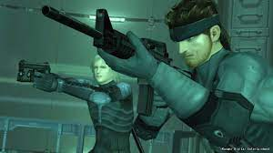
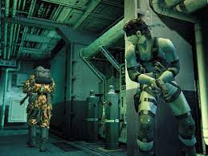

Sobre
Metal Gear é uma série de jogos enquadrados na categoria stealth, criada por Hideo Kojima e produzida
pela Konami. Nele, o jogador tem o controle de um soldado altamente treinado em infiltração (Solid
Snake, Big Boss ou Raiden) e tem que enfrentar armas com capacidade de destruição em massa, Metal Gear,
tanques gigantescos com capacidade de lançar ataques nucleares em qualquer terreno ou área do globo. A
série é famosa por ser a primeira a fazer parte da categoria "stealth", devido às suas longas cenas
cinemáticas, enredos complexos e sua exploração da natureza da política, guerras, censura, engenharia
genética, inteligência artificial, lealdade, realidade, "verdade" subjetiva vs. universal e temas
filosóficos, além de frequentemente derrubar a quarta parede.
Curiosidades
O primeiro jogo da série Metal Gear foi lançado em 1987 para o MSX2, com uma conversão inferior para
o
NES.
Em 1990, foi lançada a sua sequência, Metal Gear 2: Solid Snake. Com o surgimento da quinta geração
de
consoles, Hideo Kojima conseguiu usar o potencial do PlayStation para criar o Metal Gear Solid com
gráficos
3D excepcionais (para a época) e dublagens em todas as línguas. Depois de MGS, ainda vieram as suas
sequelas
Metal Gear Solid 2: Sons of Liberty para Playstation 2, Xbox e PC, e Metal Gear Solid 3: Snake Eater
para a
PlayStation 2. Uma versão para o PlayStation 3 da série foi lançada, em 12 de junho de 2008, pela
Kojima
Productions, chamada Metal Gear Solid 4: Guns of the Patriots. Foi desenvolvido Metal Gear
Rising:Revengeance, um spin-off com Raiden, para as plataformas Xbox 360, Playstation 3 e Windows.

Muitos personagens dos videogames contam com inspirações para as suas criações, e Solid Snake não é
diferente. Um dos principais nomes utilizados para dar vida ao protagonista veio do filme Fuga de
Nova Iorque (1981), dirigido por John Carpenter. Ele é Snake Plissken, personagem interpretado pelo
ator Kurt Russell. Características como a voz áspera e o próprio nome "Snake", tornam quase óbvia a
inspiração para Solid Snake, embora o protagonista de Metal Gear também conte com outras duas
influências mais obscuras.
De acordo com o próprio Hideo Kojima, o corpo de Solid Snake teve como base o ator Jean Claude
Van-Damme, de clássicos como O Grande Dragão Branco (1988) e Kickboxer - O Desafio do Dragão (1989).
Já o rosto também contou com traços de Christopher Walken, famoso por suas atuações em
longas-metragens como O Franco Atirador (1978) e A Hora da Zona Morta (1983).
História no mundo dos Videogames
Foi um dos primeiros jogos, se não o primeiro, a dar ênfase em progredir sem ser detectado pelos
inimigos, evitando, ao máximo, confrontar-se com eles. Muitas das coisas que viriam a ser marcas
registradas da série já aparecem nessa primeira missão de Solid Snake, como o rádio codec para
comunicação com seus superiores, para tirar dúvidas sobre a missão, ou, até mesmo, a caixa de
papelão (cardboard box). Foi feita uma versão deste mesmo jogo para o NES em 1988, porém, com 69
linhas de texto a menos e algumas modificações na história. Uma sequência, Metal Gear 2: Solid
Snake, foi lançada em 1990 para computadores MSX2, porém, somente no mercado japonês. Metal Gear 2
teve adições importantes para a série, bem como uma história muito mais elaborada e cheia de
revelações.

Depois disso, a série Metal Gear só retornou em 1998, com o nome de Metal Gear Solid, para o Sony
PlayStation, adaptando a jogabilidade dos dois primeiros jogos para um ambiente 3D. Enquanto os dois
primeiros jogos tiveram apenas um relativo sucesso, Metal Gear Solid foi um campeão de vendas, com
mais de 15 milhões de cópias ao redor do mundo. Vários jogos tentaram copiar sua fórmula, o que fez
da marca Metal Gear um dos carros-chefes da empresa Konami.
Metal Gear Solid teve duas sequências para o PlayStation 2: Metal Gear Solid 2: Sons of Liberty em
2001 e Metal Gear Solid 3: Snake Eater em 2004, cada um incrementando cada vez mais a jogabilidade e
contando mais da história do universo de Metal Gear. Em março de 2006, foi lançado o Metal Gear
Solid 3: Subsistence, com 2 discos, contendo o mesmo jogo do Metal Gear Solid 3: Snake Eater, mas
com uma nova câmera, que permite visão total e livre ao jogador. Também foram adicionados mais
recursos e o modo online, onde um jogador pode jogar contra outros pela Internet.
Metal Gear Solid 4: Guns of the Patriots é o quarto jogo da série "Solid", lançado 12 de junho de
2008, exclusivamente para o PlayStation 3. Possui o tema "sem lugar para se esconder" ("no place to
hide"). Foi produzido por Ken-ichiro Imaizumi e Hideo Kojima, este último continuando como diretor,
com a ajuda de Shuyo Murata como co-diretor. Nessa edição do jogo, que se passa no futuro, alguns
personagens dos jogos anteriores reaparecem, como Meryl, Vamp e Raiden (personagem principal do MGS
2, que desta vez se assume como um ninja). O jogo recebeu nota 10 nas três maiores revistas online
sobre jogos, Famitsu, Gamespot e IGN (onde recebeu a menção de "jogo nota 11").
Metal Gear Solid V: The Phantom Pain é o oitavo título canónico na série
Metal Gear e o sexto dentro da sua cronologia fictícia. O jogo serve como continuação para Metal
Gear Solid V: Ground Zeroes, mas a sua história é anterior aos eventos ocorridos no jogo original
Metal Gear original, do MSX2. Contém o mesmo subtítulo, Tactical Espionage Operations, usado pela primeira
vez em Metal Gear Solid: Peace Walker. A ação acontece em 1984, nove anos depois de Ground Zeroes, e
segue o mercenário Punished "Venom" Snake, à medida que este se aventura na África (no decorrer
da Guerra Civil Angolana, na fronteira Angola-Zaire) e no Afeganistão durante a Guerra
Soviética-Afegã, para procurar vingança sobre as pessoas que destruíram as suas forças e que quase o
mataram durante os eventos ocorridos em Ground Zeroes.
A mente por trás: Hideo Kojima
é um designer japonês de jogos eletrônicos que trabalhou para a Konami. Foi vice-presidente da Konami
Computer Entertainment Japan e é o diretor-executivo e chefe de estúdio da Kojima Productions, que
foi fundada em 2005 e renovada em 2015 por ele. Hideo é o criador e diretor de várias séries de
jogos populares, incluindo a série Metal Gear, Snatcher e Policenauts, além de Zone of the Enders e
Boktai. Kojima é constantemente reconhecido por fãs e especialistas da indústria de videogame
como um dos mais influentes e inovadores diretores e roteiristas de jogos eletrônicos de todos os
tempos, bem como estrelando em várias listas de top 10 diretores. Em 2008, a Next-Gen o colocou na
sétima posição na sua lista de "Hot 100 Developer 2008", enquanto que foi premiado com o
"Lifetime Achievement Award" na MTV Game Awards 2008 e também homenageado com um "Lifetime
Achievement Award" na Game Developers Conference de 2009.
Futuro da Saga
No dia 24 de outubro de 2023, na PlayStation Showcase, a Konami anuncia Metal Gear Solid Delta: Snake
Eater,
um remake de Metal Gear Solid 3: Snake Eater, junta de uma coletânea Metal Gear Solid, Metal Gear
Solid
2:
Sons of Liberty e Metal Gear Solid 3: Snake Eater, intitulada Metal Gear Solid Master Collection
Vol.1